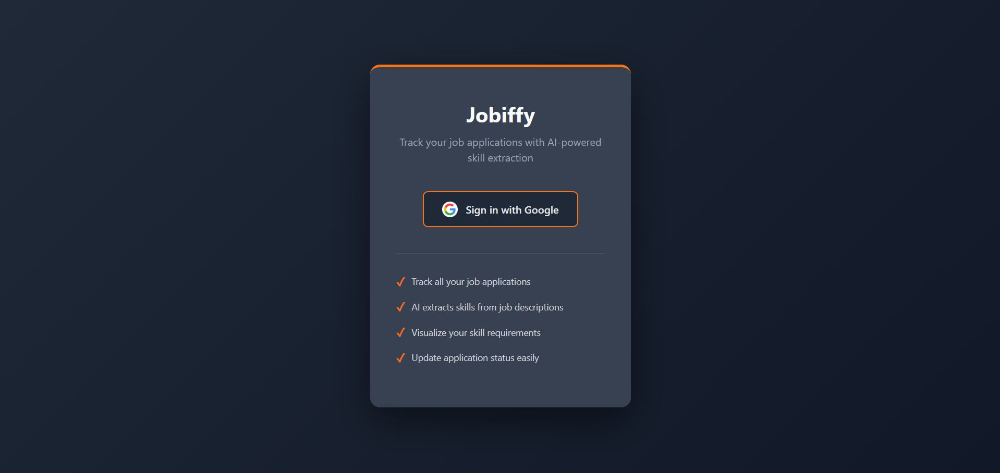
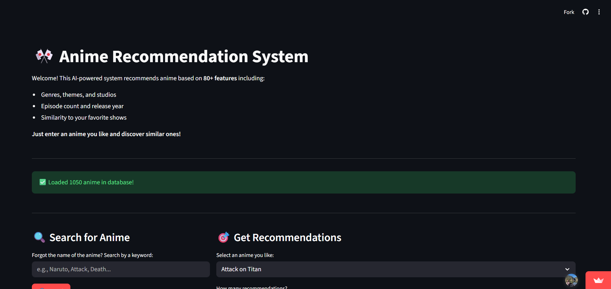
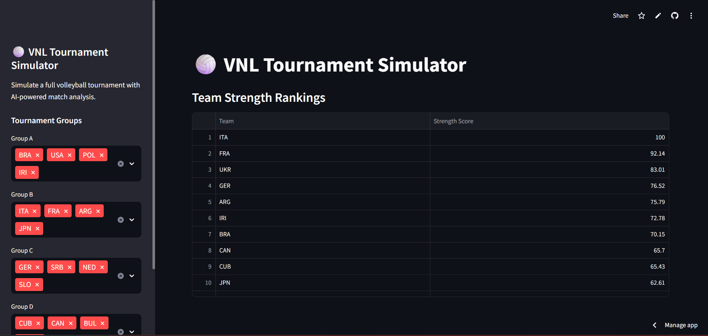
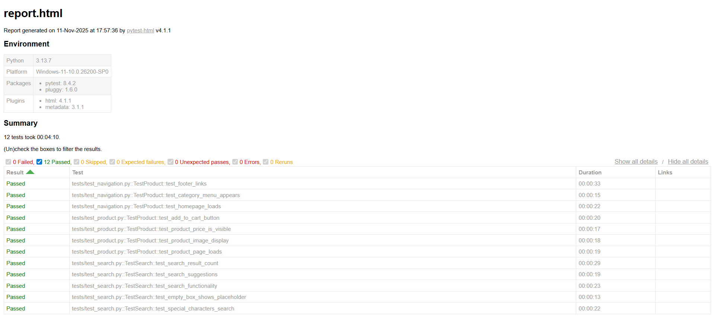

Third-year Computer Science student who builds things that actually work — from a content-based ML recommender trained on 18,000+ entries to an AI-powered job tracker with live skill extraction. Curious about how systems break, which is pulling me toward cybersecurity. Currently looking for internship or part-time roles where I can contribute and keep learning.
Get In Touch
A job application tracker built with Python & Flask. Integrates the Groq API to automatically extract required skills from job listings, helping users stay organized during their job search.

Content-based recommendation engine trained on 18,000+ entries. Scraped data from web sources, processed with Pandas, and implemented Cosine Similarity to suggest anime based on user preferences.

AI-powered volleyball tournament simulator built on VNL player statistics. Simulates full tournaments with group stages and knockout rounds, explains each match result using SHAP explainability, and generates natural language match analyses via a HuggingFace language model.

Automated testing suite for Dr.Max pharmacy. Simulates real user behavior including product search, cart operations, and page navigation using Selenium.
I'm currently looking for Internship or Part-time roles in software engineering or cybersecurity. If you think there's a good fit, or just want to talk tech — I'm always up for it.
Say Hello 👋